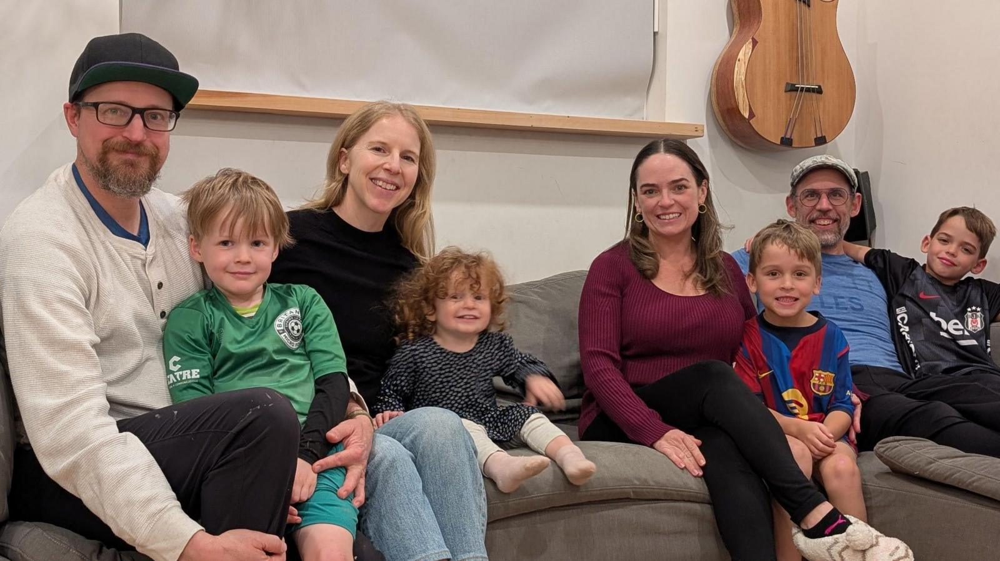
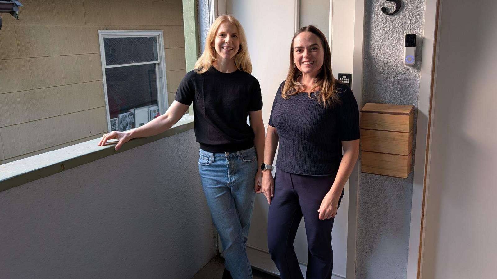
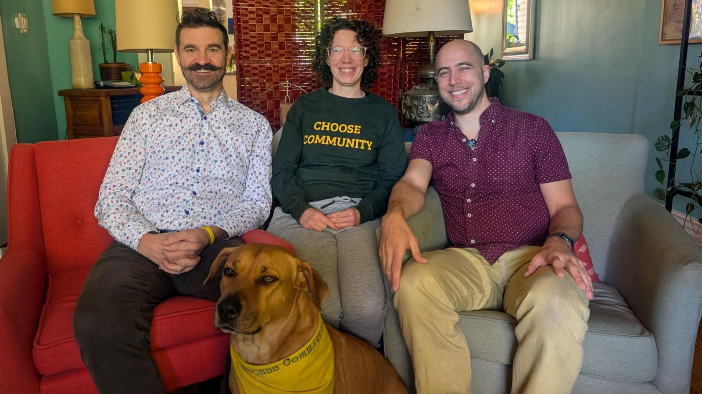

01
The home that did not add up
Elizabeth and Tom Wilcox wanted a home for themselves and their two children in Vancouver. They wanted a yard big enough for a trampoline and a neighbourhood where they could walk. With a budget of C$1 million, they found that the family home they wanted remained out of reach.
The BBC reports that the best the family could hope for was a small apartment with a balcony. The gap was between what a household could borrow and what a suitable family home cost.
The report does not establish how common co-buying is. It uses one family's experience to show how high prices reshape decisions, not to prove that the model works for everyone.
02
Two years, two households
The Wilcoxes decided to look for another household willing to buy together and placed an advertisement in an estate agent's newsletter. Two years passed before they met Ashley Pullman and her family, whom they felt they could live with.
In 2023, they bought a six-bedroom detached house for C$1.85 million. The purchase required agreement on space, expenses and responsibility before the families had tested daily life together.

-
Start
The Wilcoxes advertise.
-
+ 2 years
They meet the Pullmans.
-
2023
They buy the house.
-
2026
It still works.
03
What four walls cost
The BBC reports a combined deposit of C$250,000 and monthly mortgage payments of C$3,900. The two families split both equally, alongside bills and repairs. Equal contributions make comparison easy, but ownership shares need not be identical.
Illustrative model
Adjust the ownership split
Illustrative split of BBC-reported totals. Not financial or legal advice.

04
A house divided by agreement
Each family has some private space, including its own kitchen. They share a basement living room, a home gym and a freezer. Access is negotiated rather than assumed: if someone is using the gym, the others know to wait.
The house therefore requires emotional labour as well as money. Schedules, noise, repairs and privacy must be discussed before they become disputes, but these duties rarely appear in a mortgage agreement.
“Maybe it's arrogance but my husband and I felt like we were the type of people who could live with strangers.”
Ashley Pullman, BBC News
05
A model that extends beyond two families
Sabrina Bowman, a freelance business consultant in Toronto, has co-owned a home with two housemates since 2018 and did not know one owner when she moved in. They divided the deposit and mortgage according to income rather than splitting every cost equally.
Regular house meetings address chores, money, celebrations and disagreements before they become a crisis. Bowman told the BBC that structures for communicating about everything in the home are important.
One successful case cannot show whether co-ownership is broadly accessible. It depends on savings, compatible households and legal support that not every buyer has.

06
The small print holds the house together
Both arrangements have legal agreements. They specify notice periods if an owner wants to leave. In Bowman's home, remaining owners have the first opportunity to buy a departing person's share. Lawyer Tanya Walker told the BBC that a binding document is safer than scattered emails and messages.
Record legal ownership shares, not only who pays which bill. Unequal contributions should be written into the agreement.
The Vancouver families split bills and repairs equally, but major repairs still need a process for approval and payment.
Set out notice periods and whether remaining owners get the first chance to buy a departing owner's share.
Regular meetings give owners a predictable forum for discussing chores, money and boundaries before small problems become disputes.
No. Informal messages are harder to rely on. Seek independent legal advice before a shared purchase.
07
A solution, but for whom?
Co-ownership gave these households access to space they could not buy alone. It also transferred responsibility onto private individuals: finding partners, negotiating boundaries, carrying debt together and preparing for an exit. It is pragmatic, but not a structural fix for housing affordability.
The larger question is not whether two compatible families can share a house. It is why households need to pool salaries and legal risk to obtain a stable home in the first place.
Read the original BBC investigation